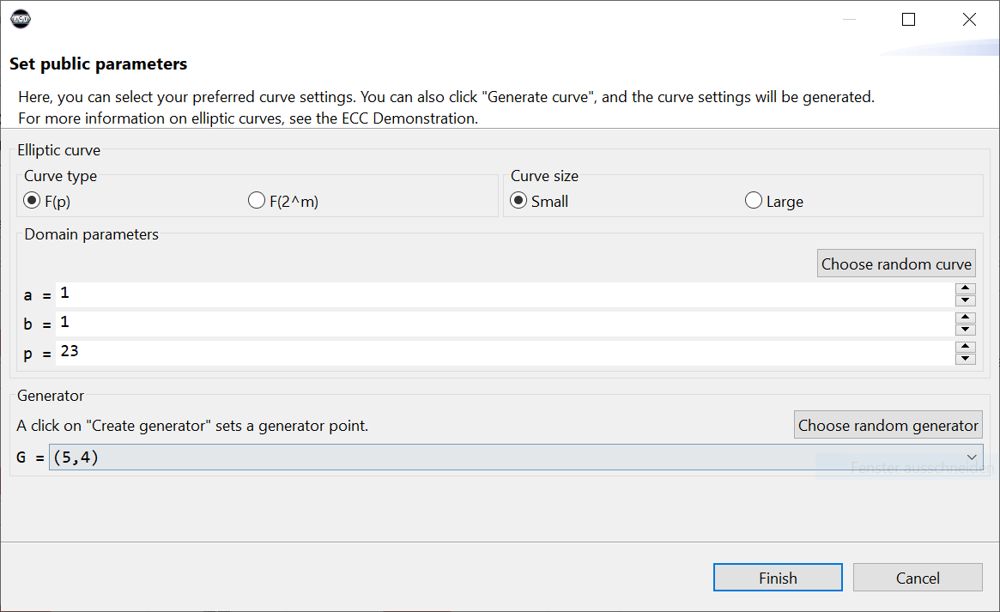
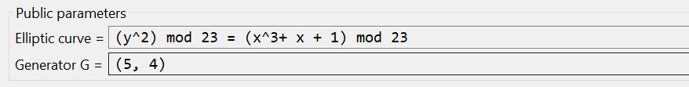
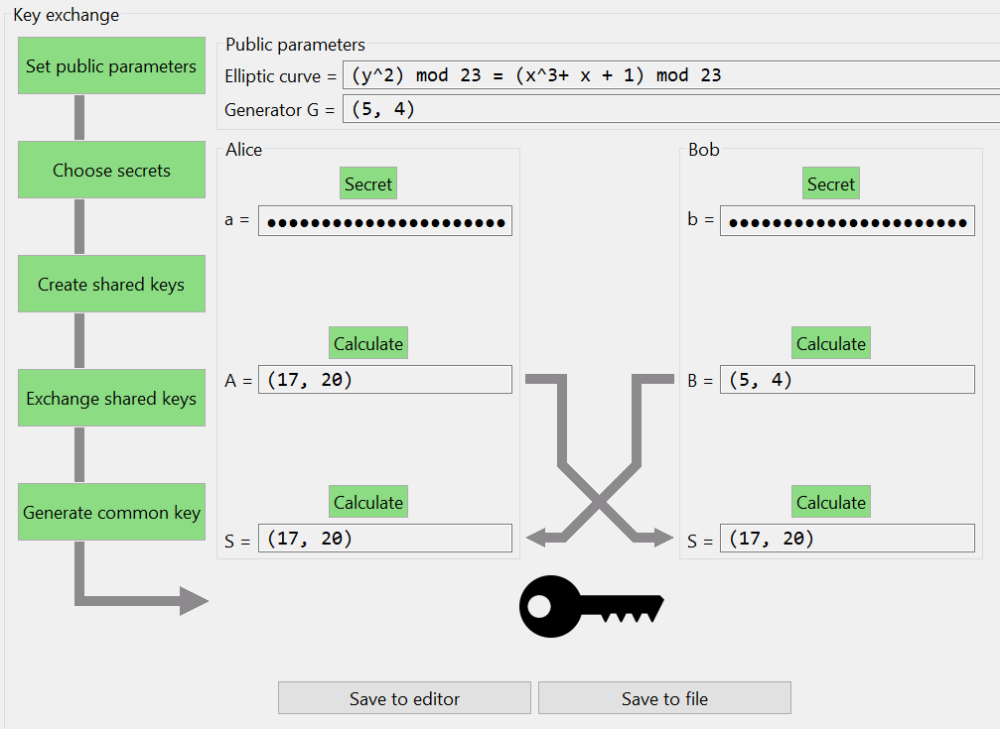

The Diffie-Hellman key exchange is a protocol that allows two parties to establish a shared secret key over an insecure communications channel.
The protocol is possible over mathematical functions, like the multiplicative group of integers mod p or over elliptic curves. Here we use elliptic curves.
Step 1. Establish public parameters
Alice and Bob agree on an elliptic curve and a generator G which is a point on the curve.
Step 2. Create secret keys
Alice an Bob both choose a secret key d which they will keep to themselves.
Step 3. Create shared keys
Alice and Bob will now multiply G by their own secret keys (scalar multiplication).
Step 4. Exchange shared keys
Alice and Bob will exchange their shared keys.
Step 5. Create session key
Alice and Bob will now both multiply each others shared key with their own secret key.
The session key is the X-value of the calculated key-point.
In order to use elliptic curves for (safe) cryptography, the curve needs to meet some demands.
In the demonstration it's possible to perform the exchange using small elliptic curves. This form is not safe for the actual key exchange because small elliptic curves cannot meet these demands.
These demands are described in e.g. "SEC 1: Elliptic Curve Cryptography" from Certicom Research (download here).
| \(E(\mathbb{F} _{p})\) | the curve itself. An elliptic curve is a mathematical group. |
| \(N\) | the size of \(E(\mathbb{F} _{p})\). This is also referred to as order of the group and sometimes as cardinality. Denoted as \(\#E(\mathbb{F} _{p})\) |
| \(t\) | the desired security level in bits. \(t\) can be \(\{56, 64, 80, 96, 112, 128, 192, 256\} \) |
| \(p\) | is prime such that \(\log_2(p) = \begin{cases} 2t \quad & \textrm{if} \; t \neq 256 \\ 521 & \textrm{if} \; t = 256 \end{cases} \) |
| \(G\) | a point on the curve used as base. \(G\) must be chosen in a way that its order \(n\) is prime \(\textrm{ord}\,(G) \in \mathbb{P}\). |
| \(n\) | the order of \(G\). Must be prime. |
| \(h\) | called cofactor and is defined as \(h = \frac{N}{n}\) (order of group divided by order of \(G\)) |
For these parameters there are some additional requirements
| \(E(\mathbb{F} _{2^m})\) | the curve itself. An elliptic curve is a mathematical group. |
| \(N\) | the size of \(E(\mathbb{F} _{2^m})\). This is also referred to as order of the group and sometimes as cardinality. Denoted as \(\#E(\mathbb{F} _{2^m})\) |
| \(t\) | the desired security level in bits. \(t\) can be \(\{56, 64, 80, 96, 112, 128, 192, 256\} \) |
| \(t'\) | the smallest integer in the set \(\{64, 80, 96, 112, 128, 192, 256, 512\}\) that is greater than \(t\). |
| \(m\) | an integer in the set \(\{113, 131, 163, 193, 233, 239, 283, 409, 571\}\) so that \(2t < m < 2t'\) |
| \(f(x)\) | an irreducible polynomial to act as generator of \(\mathbb{F} _{2^m}\). |
| \(G\) | a base point on the curve used as base. \(G\) must be chosen in a way that its order \(n\) is prime \(\textrm{ord}\,(G) \in \mathbb{P}\). |
| \(n\) | the order of \(G\). Must be prime. |
| \(h\) | called cofactor and is defined as \(h = \frac{N}{n}\) (order of group divided by order of \(G\)) |
For these parameters there are some additional requirements
The visualization (plugin) shows how Alice and Bob establish a shared key using the Diffie-Hellman key exchange protocol over elliptic curves.
It's possible to perform the protocol with small or large elliptic curves.
To start visualizing the key exchange, press the "Set public parameters" button on the left side of the plugin. In the dialog that opens you can select an elliptical curve and a generator point G.

With a click on "Finish" the parameters are accepted and appear in the group "Public parameters".

After a step of the key exchange is completed, the corresponding button turns green.
Now the next steps of the key exchange can be done. First Alice and Bob must each choose a secret. Then they calculate the common keys A and B, which are then exchanged on a public (insecure) channel. Finally, they calculate their shared session key, as described in the protocol explanation.
An animation is displayed when the common keys are exchanged. This can lead to problems with the plugin. The animation can be deactivated using the green icon in the menu bar in the upper right corner of the plugin.
When all steps are completed and Alice and Bob have successfully established a session key, a key appears at the bottom of the window.
When all steps have been completed, the two buttons "Save to Editor" and "Save to File" appear under the key. The button "Save in Editor" opens a new editor and displays the results of the key exchange in it. The button "Save to file" allows to save the results in a file. A "Save as" dialog opens. There you can select a file in which the results should be saved.

To start over, press the "Reset" button in the right corner of the demonstration and all the settings will be erased.For more information on elliptic curve calculations, see the "Demonstration of point addition over elliptic curves (EC)" or http://en.wikipedia.org/wiki/Elliptic_curves.